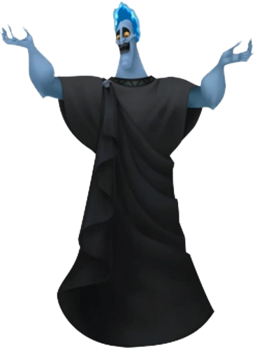

Hades
Hades is an antagonist of the Kingdom Hearts series. He first appeared in the animated film Hercules as the main antagonist. Hot-headed—literally and figuratively—he will stop at nothing to see the end of Hercules.
Hades is one of the most temperamental characters in the series. Although others are shown to be hot-headed, Hades bursts out in fury on a more regular basis. When Hades gets mad, he explodes into a red pillar of fire and his normal blue colored "hair" burns red (which is unorthodox since blue fire is warmer than red fire). Also, while Hades is infuriated, it is shown that he is invulnerable and much more forceful than in his normal state.Hades is also shown to be extremely devious and smooth while he's relaxed and tends to talk a lot; for instance, when he tricked Sora into opening the Underdrome to rescue Meg. He also shows this trait while he is speaking to Hercules, most of the time giving indirect answers and eerie hints that typically lead Hercules to jeopardy. Also, unlike other Disney villains, Hades never seems to fib directly, instead never being sincere of the matter. Hades also has boyish tendencies, like blocking his ears with his fingers and pretending he doesn't hear Sora when he tries to talk to him. Interestingly, his data representation admitted that it has an ambition to rule the world in Kingdom Hearts Re:coded.